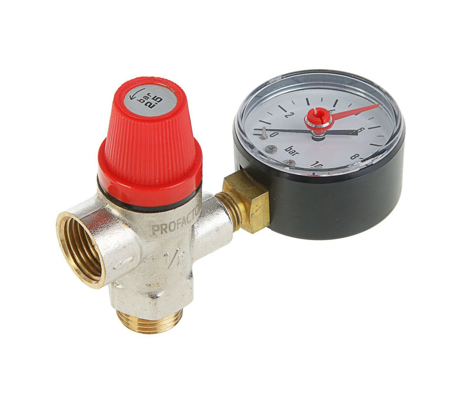
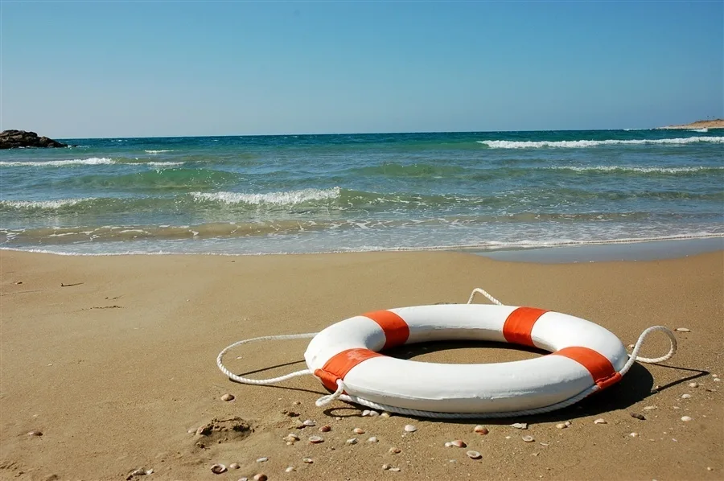
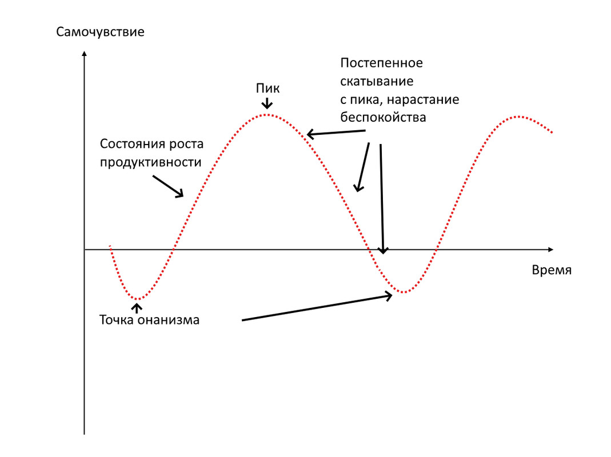
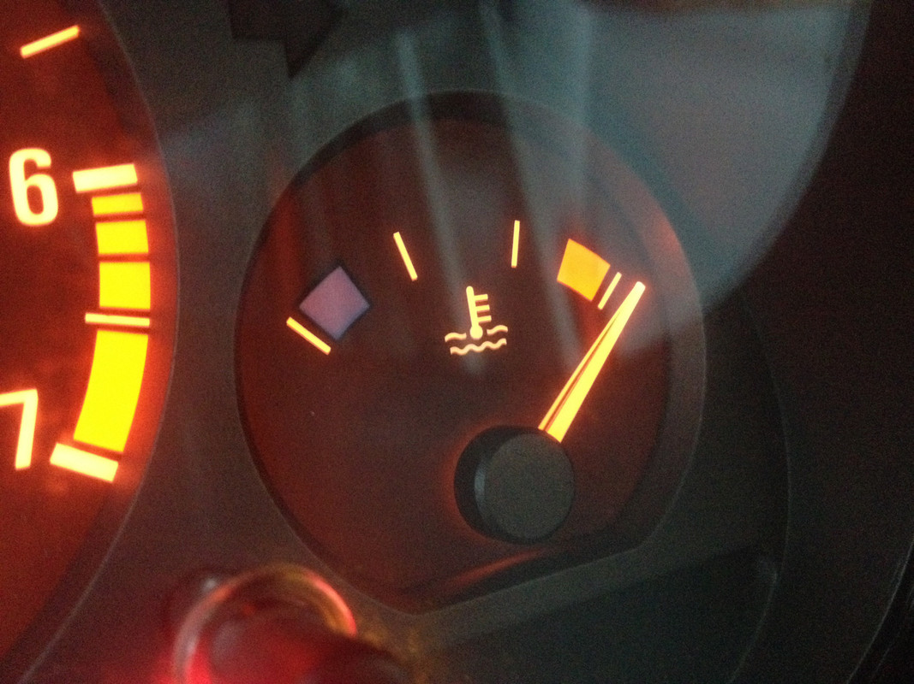

Ода мастурбації
І починаючи четверту частину, ми по суті повинні визнати те, що так чи інакше підтверджувалося в перших трьох - займатися мастурбацією НОРМАЛЬНО.
Це основа і це база.
Мастурбація зараз - це необхідний механізм, який захищає нашу психіку і нашу фізіологію від перевантаження.
Це як клапан, який спрацьовує при перевищенні критичного тиску.
Забери його, подумай, що він не потрібен - і у тебе порветься сама система.
І тому перше, що ми повинні визнати - нам ні в якому разі не треба боротися з бажанням занятися мастурбацією.
Тому що нас не просто так тягне на це.
А тягне тому що або у нас вже фізіологічно все горить і треба скинути.
Або у нас в психіці величезні труднощі, ми зазнали кількох невдач підряд, все руйнується або ніколи не було добре, у нас поганий період, і ми зараз зійдемо з розуму, якщо не дамо собі спустити пару і відволектися.
І в цей момент взяти - і перекрити механізм скидання напруги?
Це не найрозумніше рішення.
У вас просто систему розірве від тиску.
І тому коли люди говорять, що вони візьмуть і перекриють собі мастурбацію повністю - хлопці, це тупо погана ідея.
Не чіпай мастурбацію, вона тобі потрібна.
Вона тобі потрібна як те, що буде рятувати тебе, коли стане зовсім погано.
Коли прийде чорний період.
І коли у тебе зовсім не буде підтримки.
Коли ти будеш зовсім сам.
І тому перше, до чого я хотів би вас підвести - максимально вивести з зони пітьми мастурбацію.
Визнати її важливість, її корисність, її величезну заслугу в нашому житті.
Нарешті-таки, взяти і сказати мастурбації дякую.
За те, що виручала нас, за те, що допомагала в складних ситуаціях, і за те, що ми всі живі завдяки їй.
Неймовірно корисна, потрібна функція.
Без якої нам було б дуже погано і дуже тяжко.
Годі, просто годі думати, що мастурбація це зло, що мастурбація шкідлива.
Ні, вона не шкідлива.
Вона божевільно корисна.
Тому що вона допомагає нам в критичні ситуації не зійти з розуму.
Це той самий наркотик, який у нас завжди з собою.
І ми вживаємо його завжди, коли нам стає особливо погано.
І нам потрібна срочна підтримка і екстрене порятунок.
Та й зрештою - хай я навіть забуду про психологічні моменти.
Достатньо й того, що типовий чоловічий організм в наш час виробляє стільки насіннєвої рідини, що вона починає його тяготити.
І навіть нічні полюції не допомагають йому досягти повного розслаблення.
Нам треба скидати її час від часу, щоб не дригатися і не згинатися від незрозумілих станів.
І навіть на рівні фізіології це допомагає нам відчувати себе в порядку.

І тому, по факту - я хочу вперше серед борців проти мастурбації виступити на її захист.
Мастурбація - КРУТА РІЧ.
Вона потрібна, важлива, необхідна, бажана, корисна, чудова.
І сама ідея боротьби з нею - це дурниця.
Дурниця з тієї причини, з якої будь-який інженер вам скаже - навіщо боротися і намагатися заткнути клапан надлишкового тиску, при тому що якщо у вас це вийде - всю систему розірве, якщо можна зробити так, щоб надлишкового тиску НЕ БУЛО?
І тоді клапан, навіть будучи повністю працездатним, буде тижнями, місяцями і роками простіювати. У ньому просто не буде потреби з тієї причини, що він вмикається лише в критичні моменти, коли тиск росте і треба срочно вмикати аварійний скид. А немає критичних моментів - немає й спрацьовувань.
Ви тільки подумайте - яке божевілля взагалі намагатися так чи інакше тим чи іншим способом вимкнути аварійну систему, яка зберігає життєздатність всієї станції тоді, коли щось йде не так?
А адже ми намагаємося це зробити, коли боремось з мастурбацією, яка цією аварійною системою є.
Добре, що у нас нічого не виходить.
І тому ми все ще живі і все ще тут.
Ми не змогли перехитрити вищого інженера і це добре.
Всі наші методи, наші костилі, наші способи перемогти провалюються раз за разом.
Завжди виявляється, що система має приховані можливості.
І знаходить способи скинути те, що їй треба скинути.
Тому перше, що нам треба запам’ятати - прибираємо руки від мастурбації.
Хай все йде, як йде.
Вона знає, що робить, і добре.
Лише іноді, в ті моменти, коли нам треба зробити щось важливе, а для мене, як для людини творчої, дуже важливо робити глибокі, сильні матеріали, ми можемо акуратно попритримати скид тиску на дні і бути може, навіть тижні.
Щоб закінчити проєкт, щоб, користуючись тим, що скрізь тиск високий, але ще не критичний, від якого всі прилади стрибають і показують що попало, видати максимум і зробити щось дуже круте.
Але хай це не переростає в бажання доводити все до предаварійної ситуації.
В якийсь момент киньте весела.
Хай система скине всі надлишки, перезавантажиться і знову почне своє зростання.

А ось що реально важливо - так це працювати над тими чинниками, від яких тиск у системі росте.
Ось що реально важливо.
Не мастурбація, яка є лише наслідком і рятівним кругом.
А причина.
Причина, з якої тиск у системі росте.

І найперша, і найважливіша причина, з якої цей тиск росте - це накопичення насіннєвої рідини (і, на рівні енергетики, ймовірно енергії в другій чакрі).
Причому, у середнього чоловіка приблизно до сьомого дня тиск вже високий, до десятого дуже високий, а плюс мінус до другого тижня він вже критичний і призводить до того, що всі датчики починають шалити.
І якщо, скажімо, на сьомий день гострота думки, краса жартів, швидкість бігу максимальна, оскільки тиск у системі високий, але ще не критичний, то день на 12 вже не все так гарно. Це як довго не їсти. Ніби й енергії багато, і сил. Але всі думки якось нав’язливо крутяться навколо їжі. І немає в цьому вже ні продуктивності, ні сенсу.
Так само й з мастурбацією - формально вона призводить до просідання. Але в якийсь момент тиск вже настільки високий, що він сам по собі стає контрапродуктивним. І скинути напругу стає бажаним і корисним. Просто для того, щоб піти від цих божевільних перевантажень і знову почати тямити.
Втім, уважний читач помітить, що рівно непродуктивним є як стан низького, так і надвисокого тиску. Божевільно згоден і дякую вам за цю глибоку думку.
Справді, ми одразу після мастурбації мляві й слабкі. Але вже на третій день ми досягаємо доброї продуктивності, на п’ятий нас прорвує, на сьомий ми в топі, але на десятий думки вже лише про секс, нас щось починає турбувати. Ми полетіли з гірки вниз. Пік продуктивності пройдений і більше не повернеться.
І тому, по факту, мастурбація тут відіграє роль такого великого рубильника. Який запускає великий цикл перезавантаження і повернення до початку.
І хай одразу після мастурбації ми непродуктивні. Але ми непродуктивні й тоді, коли дуже довго фізіологічний тиск у трубах ріс. І тому по великому рахунку нам вигідно тримати себе саме в стані найвищої продуктивності. Коли тиск вже не низький, але ще й не надмірно високий. Тому що і те, і те зона слабкості, система погано працює і там, і там. Але добре працює в зоні середнього тиску.
І попереджаючи ваше питання - чи існують техніки, щоб підтримувати тиск на рівні фізіології на достатньо високому рівні, рівні максимальної працездатності, але щоб він не переходив у критичний? Та сто разів так. Але мені вони невідомі.
Я лише майже впевнений, що є стоїки, які їдять раз на день, або ченці, які можуть медитувати по кілька годин, або просто люди зі слабкою статевою функцією, у яких цей ліміт саме на рівні фізіології впирається в якісь фантастичні цифри. З розряду лише через рік, або десять років їх жорстко вдарить, а то й ніколи.
Але середнього чоловіка, як ни крути, вже день на десятий придавить неймовірно. Так, що він почне дригатися, суетитися, і чинити марні дії. Від яких йому ні холодно, ні гаряче. І потрібен, буквально, аварійний скид, щоб все прийшло в норму.
І тому, глобально, саме на рівні фізіології важливо запам’ятати ось що.
Не існує якоїсь робочої техніки зупинити ріст напруги для широких верств КРІМ!
Крім сексу, природно.
Саме секс гальмує процес накопичення фізіологічних надлишків.
І якщо його немає - то мастурбація просто неминуча приблизно на 10-14 день.
І звідси, всі хлопці, які мають намір так чи інакше пробити рубіжі в два тижні, серйозно, можна сказати професійно займаються питанням особистого життя.
Тому що тобі потрібна не просто дружина.
З якою у вас швидко підуть сварки і вона влаштую тобі сухий закон.
А така дружина, з якою ти станеш майстром і асом стосунків.
І зможеш домогтися від неї максимальної прихильності і регулярного статевого життя.
Достатнього, щоб ти В ПРИНЦИПІ забув про те, що існує якийсь постійний ріст напруги саме за фізіологічним принципом.
Щоб у тебе, за виключенням пологів, або якоїсь серйозної хвороби - таке питання взагалі не стояло.
І ти взагалі виключив його з рівняння.
І знову ж - виникає питання.
Але що робити тим, хто не може знайти дівчину?
Хлопці, два моменти.
По-перше, якщо у вас немає дівчини, є сенс ТРОХИ піджимати свій клапан високого тиску, щоб мотивація її знайти була на високому рівні.
Як це вийшло у мене - нікому не рекомендую. Я взагалі три місяці був на суворому утриманні і мені дали дружину за такий подвиг, мабуть. Але по факту - я кажу про більш м’яке рішення.
А саме - якщо вас вже нормально так підпирає на п’ятий, то витримайте днів так до сьомого-восьмого, а то й десятого - дванадцятого. І це перебування в зоні надлишкового тиску буде наводити вас на погані думки. І сильно підвищить шанс когось зустріти.
Загалом - не зливайте все. Тримайте себе під парами. Тому що у випадку, коли ви самотні, це практично необхідний захід. Ну не спіймаєте ви жінку чи чоловіка на порожній статевий центр, як рибу на гачок без наживки. Треба, щоб його розпирало, щоб вас прорвало, щоб тиск у системі був, бути може, навіть трохи вище оптимального.
Що викликає достатньо характерну метушню в стилі - треба з кимось познайомитися і якось щось для цього зробити. Пам’ятаю, в часи свого довгого утримання я стільки всього перечитав за стосунки, що за три місяці став експертом. Був інтерес і були погані сили, яким було нікуди застосувати.
А по-друге, якщо ви самотні, просто змирийтеся з тим, і ставтеся спокійно, що мастурбація вам буде потрібна для аварійних скидів. В цьому немає нічого поганого. Навпаки, ви будете з її допомогою виходити з зон критичного тиску. Де вас не чекає нічого доброго, крім перевантажень усіх систем і нав’язливих станів. Ставтеся до цього спокійно і впевнено, прихильно і з теплотою.
Вперше з радістю прийміть те, що ваша система перегрівається, і вам треба її розвантажувати час від часу.
А якщо вам здається, що ви ЧАСТО вдаєтесь до мастурбації, то справа то не у фізіології. Яка в середньому підпирає день так, припустимо, на сьомий, а то й десятий. І якщо ви робите це частіше, це зовсім не фізіологічні причини. А полягають у тому, що ви нещасні, що ви сумуєте, що ваше життя не має радості.
І якщо ваша проблема саме у фізіології, і ви займаєтесь мастурбацією, скажімо, раз на тиждень, а то й рідше - то важливо зрозуміти - це й НЕ проблема взагалі. Це саме елемент балансування системи, і виведення її зі стану перевантаження в робочий режим.
Коли ми бути може, втрачаємо в якійсь мірі день, коли ми зайнялись мастурбацією. Але вже на другий третій входимо в оптимальний режим продуктивності, на п’ятий досягаємо піку, а на десятий летимо вже з нього і немає СЕНСУ просто триматися далі.
Як сказали б на біржі - треба зафіксувати збиток і змиритися з тим, що в даний момент часу ми практично не контролюємо статеву систему. І тому ми не можемо просто взяти і зусиллям волі сказати їй - статева напруга - не накопичуйся. І жити вічно на оптимально середньому тиску.
Ні, наша роль стає зовсім іною. Ми час від часу її перезавантажуємо, щоб вона не перегрівалась.
Ідеально це рішення? В сферичному світі у вакуумі? Ні, не ідеальне. Ідеально було б досягти такого рівня розвитку, щоб ми вирішували, який тиск буде.
Але в світі реальному це просто реальність. На десятий день без мастурбації/сексу ми перегріті. І нам треба вирішити, що робити далі - перегріватися і далі, поки не почнемо дригатися чи тупити. Або піти на скид, втратити день, але після цього спіймати тиждень, а то й більше дуже високої продуктивності.

І особисто я ДУЖЕ боюся мастурбації, це правда. З тієї причини, що всі мої продукти вимагають надзвичайно високого тиску в системі. Я не можу взяти і занятися мастурбацією, а потім вийти і зробити крутий гайд. Мені доводиться тижнями сушитися і готуватись до цього.
Але навіть я розумію - грати в стійкого олов’яного солдатика немає сенсу. Якщо в якийсь момент я зрозумію, що вже тиск шкалить, а мені все ж таки 37 і він вже не те щоб прямо мене атакує, я не буду робити мозок собі і людям.
Бізнес навчив мене простої ідеї - іноді збиток треба фіксувати. І незважаючи на те, що моя робота, моя творчість прямо залежать від того, наскільки я преуспів у підтримці високого тиску в системі, в якийсь момент я все одно піду на його обнулення. Тому що краще вже перетерпіти пару днів у стані низького рівня енергії, ніж жити у стані вічного голоду. Від якого продуктивність теж падає як не в себе.
Але давайте будемо чесними. Якщо ви вже дійшли до стану, коли ви вдаєтесь до мастурбації лише тоді, коли вас підперло фізіологічно - ви визначно легенда нашого часу.
Тому що якщо ви одружені, і у вас добрі стосунки, то у вас може місяцями не бути критичних моментів, оскільки що, а секс раз на тиждень ви свій отримаєте. А якщо ви самотній і займаєтесь мастурбацією разів три на місяць, то тут взагалі не може бути до вас ніяких питань. Ви вже красавчик капітальний. Який робить все ідеально, і по суті - вам нікуди рости. Ви вже досягли неймовірного рівня, і далі у вас майже немає шляху розвитку. Я маю на увазі - продуктивного, реального шляху.
Тому що спроби триматися БІЛЬШЕ і ДОВШЕ найчастіше насправді дуже контрапродуктивні. Ви збільшуєте терміни, ви намотуєте собі місяці суворого утримання. Але ви не відчуваєте себе добре. Навпаки - ви відчуваєте себе все гірше і гірше.
І людина, яка займається мастурбацією пару разів на місяць, будучи самотньою, чомусь більш задоволена ніж ти, більш задоволена ніж ти, більше заробляє, і вільно жартує на різні теми. Вона розслаблена і задоволена собою і життям. Вона, як сказав би Будда - нащупала секрет середнього шляху.
Коли з одного боку пекло повної розпусти, коли ти скидаєш тиск, який ще навіть не почав рости. А з другого боку, ти тримаєш рекорд, як у тому знаменитому випуску Єралашу. Понту від цього ні в голові, ні в дупі, ніде.
Це має сенс епізодично, коли, наприклад, тобі загрожує банкрутство, або ти працюєш над серйозним матеріалом (як я зараз працюю над ЖБО - який до чорта мастурбація, тут все посиплеться одразу). Але жити так постійно - контрапродуктивно. Зрештою як тут не згадати фразу - хто сам напружується, той і інших напружує. А воно нам треба? Та ні звісно.
І тому хай я буду той, хто скаже це першим - дрочте НА здоров’я, якщо у вас немає дружини/подруги.
Годі плевати проти вітру.
З тієї причини, що навіть якщо ви розглядаєте варіант досягнення максимального життєвого успіху, то й для нього треба вдаватися до скиду напруги.
Щоб тримати себе в зоні продуктивності і успіху.
А ось якщо у вас дружина є, і стосунки добрі - ось тут вже можна спробувати, що називається, крутити лічильник.
Тому що все ж таки секс набагато корисніший, ніж мастурбація. Це ніби такий клапан надлишкового тиску, який не випускає з системи зайву пару. З тієї причини, що немає ефекту Куліджа, та й потім, що поборотися за нього доводиться, і тому, що гормонів там особливо немає, якщо у вас стосунки вже не нові. Ви ніби отримуєте мільйон плюсів і майже жодних мінусів. Млявість від сексу набагато слабша, ніж млявість від мастурбації. І тому він завжди крутий і завжди незрівнянно кращий.
Але справа ж не у фізіології, і чомусь мені здається, що ви розумієте це.
Тому що фізіологія - це мастурбація раз на тиждень тире десять днів.
А при наявності дружини - раз на місяць тире два, коли вона не може/не хоче і вас підперло.
Але по факту - такими цифрами можуть похвалитися одиниці.
Люди неймовірно розвинені і просунуті.
Супер круті, супер прокачені.
З занадто високим рівнем розвитку.
Всі інші крутять лічильник набагато, набагато частіше.
І причина цього в тому, що мастурбація нам потрібна не лише для скиду фізіологічної напруги.
Це лише одна з її функцій, яка є в наш час лише допоміжною(!).
Але по факту - ми її використовуємо для того, щоб поправити наше відчуття того, що наше життя повне лайна.
Тоді, коли ми зазнали поразки.
Тоді, коли ми незадоволені своєю роботою.
Тоді, коли нам сумно, нам сумно.
І ось тоді ми і займаємось мастурбацією.
І це є ОСНОВНОЮ причиною того, що ми до неї вдаємось.
Не фізіологічна потреба, яка виникає рідко.
А саме потреба психологічно розвантажитися.
І рівно так само, як людину, посадженої в тюрму - тягне закурити, щоб відволектися від тяжкості свого становища, нас тягне ввімкнути порнографію, щоб забути, де ми і в якій ситуації знаходимося.
Втім, це вже тягне на окремий великий розбір, якому буде присвячена частина п’ята.
Але на даний момент відіграє значення ось яка думка - мастурбація це ДОБРЕ!
Ось що важливо вам почути.
І треба боротися не з мастурбацією.
А з тією причиною, яка до неї призводить.
І якщо ми вже тут так багато говорили про фізіологію, про накопичення напруги, то ідеальний варіант такий - вам потрібен реальний секс.
Це ДУЖЕ бажано, якщо ви дійсно бажаєте серйозно накопичувати лічильник, є у вас така амбіція.
Тому що розберетесь ви з психікою, не розберетесь.
А ось з фізіологією ви 99 відсотків не справитесь без екстра заходів.
Які складні, довгі і незрозумілі.
А знайти собі дружину - реально більш ніж.
І якщо вона у вас є - ви фізіологію вважай перемогли.
У вас все кайф.
А ось зможете ви перемогти смуток і нудьгу, яка змушує вас вдаватися до мастурбації набагато частіше, ніж того вимагає фізіологія, дізнаємось в наступній частині.
Адже ця тема набагато більш глобальна і складна для розкриття.